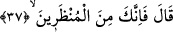

Yâni makbûl kullarımızın makamından uzaklaştırılmış, kahredilmiş olarak lânet senin
üzerine olacaktır.
36. (İblis:) “Rabbim! Öyle ise, (varlıkların) tekrar dirileceği güne kadar bana
mühlet ver.” dedi.
İblis (Allah ona hak ettiği cezâyı versin) dedi ki: “Rabbim! Öyle ise” mâdem beni
kovuyorsun, Âdem ve zürriyetinin dünyâdan tamâmen fenâ bulup hesap için “tekrar
dirileceği güne kadar bana mühlet ver.” beni geri bırak “dedi.” Bu isteğiyle İblis, hem
Âdem (a.s.)’ı ve zürriyetini kandırmanın ve onlardan öcünü almanın yolunu arıyor, hem
de ölümden kurtulmanın hesâbını yapıyordu. Çünkü ba‘s/diriliş gününden sonra ölüm
zâten yoktur. Allah onun ilk isteğini kabûl ederken, ikincisini reddetti. Nitekim Allah
Teâlâ şöyle buyuruyor:
37. Allah buyurdu ki: “Sen mühlet verilenlerdensin.”
Yâni, ezelde ecelleri ertelenmiş olanlardansın “dedi.” Âyet, İblis dışında eceli
ertelenen başka varlıklar olduğuna da delâlet etmektedir. Bu varlıklar meleklerdir.
Onlar erkek ve dişi değillerdir. Çocukları olmaz. Ne yerler ne içerler, ne de kıyâmete
kadar ölürler. Şeytanlara gelince, onların erkek ve dişileri vardır. Çocukları olur,
ölmezler, tıpkı İblis’in ebedîliğine benzer bir ebedîlikleri vardır. Cinlerin de çocukları
olur. Erkek ve dişileri vardır. Onlar ölümlüdürler.
Haccâc b. Yusuf’a Çin diyarında yollarını şaşıranların kendilerine ‘yola gelin’ diye
çağıran bir ses duydukları fakat kimseyi görmedikleri bir yer olduğu haberi ulaştı.
Haccâc, mezkûr bölgeye bir grup adamını göndererek kasden yolu şaşırmış gibi
yapmalarını emretti. “Size: ‘Yola gelin.’ dedikleri zaman üzerlerine atılın ve bakın
bakalım neyin nesi imişler?” dedi. Onlar da aynen dediği gibi yaptılar. Onlar da ‘Yola
gelin!’ dediler. Grup sesin geldiği yöne doğru atıldı. Sesin sâhipleri şöyle dedi: ‘Hiç
şüpheniz olmasın ki, siz bizi göremezsiniz. Gruptakiler: ‘Peki ne kadar zamandır
buralardasınız?’ diye sorunca da şöyle cevap verdiler: ‘Biz seneleri saymıyoruz. Şu
kadarını belirtelim ki Çin sekiz kez harâbeye dönüp sekiz kez de îmâr edildiği halde biz
hâlâ buralardayız.’
Çin, biri Kûfe’de diğeri de doğuda bulunan iki yerin adıdır. Çini kaplar (seramik
mamûlleri) o doğudakilerden gelir. Ayrıca Hind diyarının uzaklarında da bir Çin
beldesi vardır.